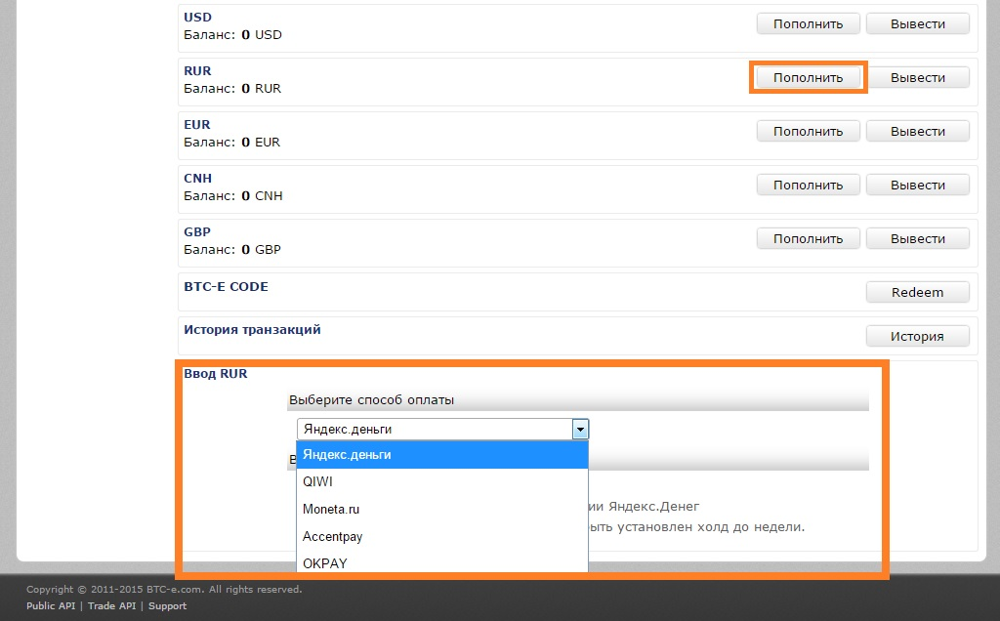
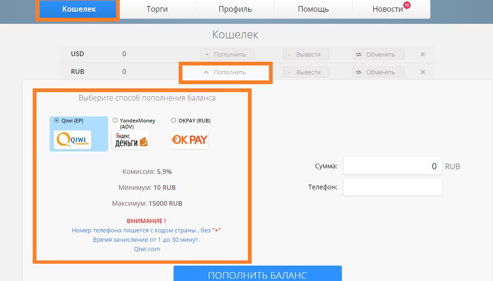

Как купить или продать биткоины?
Несмотря на устоявшуюся точку зрения, биткоин, на самом деле, товар весьма ликвидный. И это правило работает даже в России, вопреки недружелюбному отношению регуляторов к цифровым валютам. Далее рассмотрим где купить биткоин могут жители России или продать их. Если конечно у вас уже установлен биткоин кошелек.
Внимание! В криптовалютном мире все быстро меняется. Это статья 2015 года, и многие вещи, написанные в ней уже потеряли свою актуальность. Но для истории ее интересно сохранить, чтобы понимать, как менялся мир криптовалюты.
Биткоин биржи
Самое безопасное место, где можно купить биткоины за рубли – это биткоин биржи. Процесс покупки биткоина через биржи криптовалют, как это не звучит страшно со стороны, очень прост, там вы можете совершить обмен биткоин на вебмани. Список самых крупных бирж в порядке убывания:
BTC-E – самая старая (и на 2021 г. уже закрывшаяся) биржа, работающая с рублями. Имеет самые большие объемы торгов среди русских биткион бирж. Регистрация простая:вам нужно ввести и подтвердить свою электронную почту, логин и пароль. Депозиты в рублях можно делать через следующие платежные системы: Яндекс деньги, QIWI, Moneta.ru, OKPAY. Депозиты в долларах можно делать через PerfectMoney, OKPAY, MoneyPolo, QIWI, Moneta.ru, Accentpay, International Wire Transfer, Ecoin, Epese. ВНИМАНИЕ! После депозита вывести биткоин с биржи можно только через 72 часа!

На этой же бирже можно продать биткоины. Комиссия биржи - какие-то доли процента.
Exmo – открылась в конце 2013 года. Отличная быстро развивающаяся биткоин биржа, хорошие объемы по рублям. Тормозов не замечено, быстрый саппорт. Простая регистрация. Логин, пароль и почта (подтверждение с почты). Депозиты в рублях можно сделать через Яндекс.Деньги, QIWI, OKPAY. Депозиты в долларах можно делать через PerfectMoney, Payerr, AstroPay, WireTransfer, OKPAY. После депозита можно сразу выводить купленные биткоины.

Самые выгодные курсы на покупку биткоинов всегда можно найти на этих двух биткоин биржах.
Автоматические онлайн-обменники
matbea.com – Наши партнеры, работают с 2013 года, быстрый саппорт. Возможность купить биткоины за Сбербанк, Альфа-Банк, Тинькофф, ВТБ24 телебанк, Руссский Стандарт, Промсвязьбанк, Райффайзен. Заявки обрабатываются в ручном режиме. Доверять можно.
alfacashier.com – один из самых старых и проверенных автоматических обменников. Огромные обороты. Требуется всего 2 подтверждения от криптовалют, доступных на сайте. Возможность покупки биткоинов за PerfectMoney, OKPAY, Яндекс деньги, BTC-e коды, MoneypoloUSD, BankTransferUSD, BankTransferRUB, PayPalUSD. Доверять можно.
xmlgold.eu – работают с 2000-х годов. Обеспечивают необходимый уровень безопасности по протоколу SSL с 256-битным шифрованием. Возможность покупки биткоинов за PayWeb, Payeer USD, OKPAY USD, Bank Transfer USD, Bank Transfer GBP, Bank Transfer EUR, MoneyPolo USD, MoneyPolo EUR, C-CEX USD, Perfect Money, PayPal USD. Доверять можно.
xchange.cc – Активно развиваются с начала 2012 года. Зарегистрированы в Панаме. Возможность покупки биткоинов за PerfectMoney, Яндекс деньги, BTC-e коды, Сбербанк, ВТБ24, Русский стандарт, Тинькофф, Ак барк банк, QIWI, OKPAY, Связной банк, Альфа банк, Авангард банк, Газпром банк, Открытие банк, Payeer. Доверять можно.
belkapay.ru – Работают с 2013 года. Офис находится в Киеве. Есть опция покупки биткоинов за наличные. Возможность купить биткоинов за Яндекс деньги, Приват24, PerfectMoney, BTC-e коды, OKPAYUSD, Payeer, Наличные, WMZ, WMR, WMU, WME, VISA/MC. Доверять можно.
Покупка биткоин через WebMoney
Вы будете удивлены, но Биткоин можно купить даже в системе WebMoney. Валюта называется WMX. Сконвентировать средства из обычных валют WMR, WMZ, WME достаточно просто. Для вывода монет на личный кошелек можно воспользоваться сервисом https://wmx.wmtransfer.com/Home/Withdraw.
Покупка биткоин с точки зрения законов РФ
Мы даем анализ текущей ситуации по возможностям покупки биткоинов и продажи. Мы призываем не совершать никаких противоправных действий и самостоятельно и всесторонне оценивать любые возможные правовые последствия своих действий.
Изучим коротко вопросы, связанные с правовым статусом операций по продаже и покупке цифровых валют в нашей стране на сегодня. Рассмотрим для ясности очень простой пример:
По законодательству РФ все расчеты между субъектами хозяйственной деятельности на территории страны должны осуществляться в местной валюте, а именно в рублях. В связи с этим возникает разумный вопрос: «На основании чего можно проводить расчеты с иностранными интернет магазинами в долларах или евро?». Дело в том, что в законодательстве обнаруживается весьма интересная брешь, которой и пользуются предприниматели. Ключевое слово в этом вопросе – иностранные. После того как на сайте интернет-магазина были введены личные данные плательщика, и был подтвержден платеж, происходит следующее:
– рубли конвертируются и переводятся на валютный счет банка, эмитировавшего карту;
– средства уже в валюте перечисляются продавцу.
Таким образом, на территории РФ имеет место только операция обмена валюты. А расчеты за товар уже проходят в рамках юрисдикции страны, на территории которой находится продавец товаров через интернет. При этом факт физического присутствия покупателя в магазине совсем не нужен. С точки зрения законодательства нашей страны, покупатель просто поменял рубли на валюту. После этого он вывел валюту за пределы юрисдикции России.
В итоге, несмотря на наличие запретов в РФ, на текущий момент «дыры» в законодательстве позволяют приобрести валюту за рубли, а уже за эту валюту уже купить необходимые товары или услуги в магазине, расположенном в иной юрисдикции. Биткоины входят в перечень товаров, которые можно приобретать по такой схеме. Следовательно, любой сайт, подходящий под следующие требования, находится за пределами юрисдикции нашей страны:
a) сайт не расположен на домене .ru или .рф
б) сайт находится на физических серверах за пределами РФ
Таким образом, и все действия россиян на данном сайте находятся за пределами норм, диктуемых законами России. Однако нужно учесть, что правоохранительные органы могут взглянуть на данный вопрос и под другим углом, который будет отличен от нашего мнения.